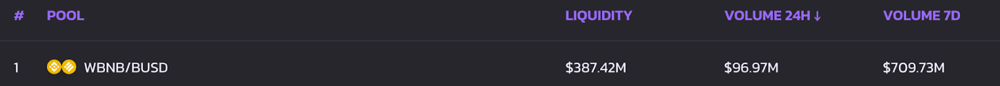

PLU
PLU Yield Farms allow users to earn PLU while supporting Pluto by staking LP Tokens.
Check out our How to Use Farms guide to get started with farming.
Learn how to find Farm smart contracts
Yield farming can give better rewards than Pools, but it comes with a risk of Impermanent Loss. It’s not as scary as it sounds, but it is worth learning about the concept before you get started.
Check out this great article about Impermanent Loss from Binance Academy to learn more.
Yield Farm APR calculation includes both the rewards earned through providing liquidity and rewards earned staking LP Tokens in the Farm.
Previously, rewards earned by LP Token-holders generated from trading fees were not included in Farm APR calculations. APR calculations now include these rewards, and better reflect the expected APR for Farm pairs.
Below is a basic explanation of how APR is calculated.
In the image above of the WBNB/BUSD pair, we see these values:
Liquidity: $387.42M
Volume 24H: $96.97M
Volume 7D: 709.73M
To calculate the APR, first we take the 24hour volume, $96,970,000, and calculate the fee-share of LP-holders, 0.17% [$96,970,000*0.17/100 = $164,849].
Next, we estimate the yearly fees based on the 24h volume [$164,849*365 = $60,169,885].
Now we can calculate the fee APR with yearly fees divided by liquidity [($60,169,885/$387,420,000)*100 = 15.53%] With the fee APR, we can add the fee APR (15.53%) and the Farm staking APR (20.08%) to get the new total APR [15.53%+20.08% = 35.61%].